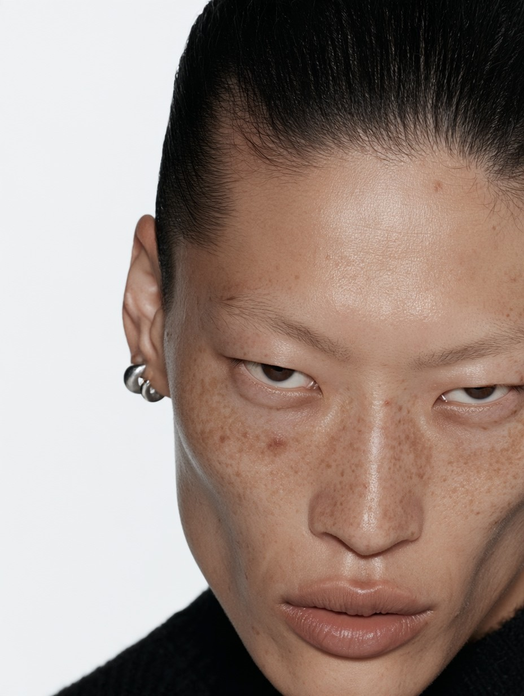
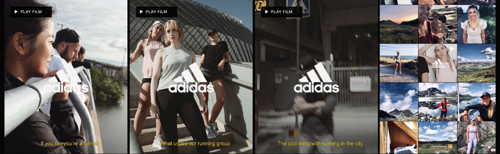
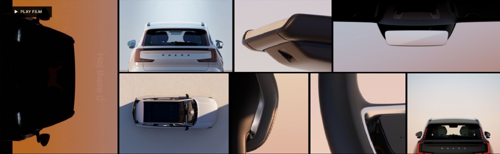
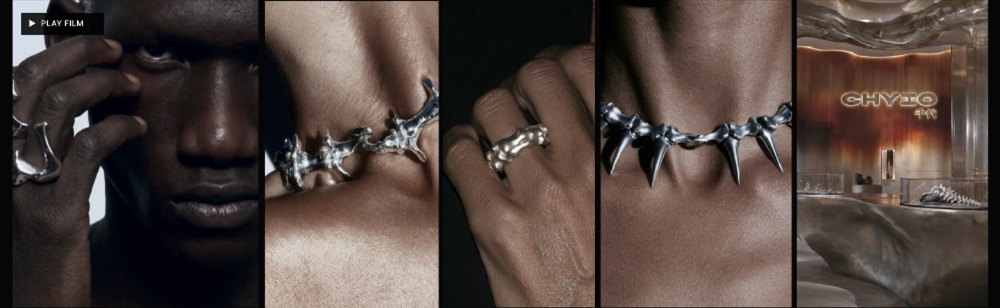
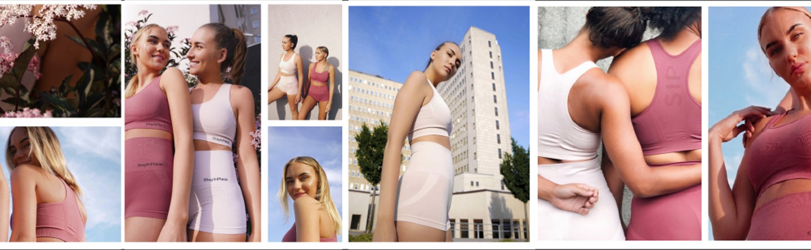
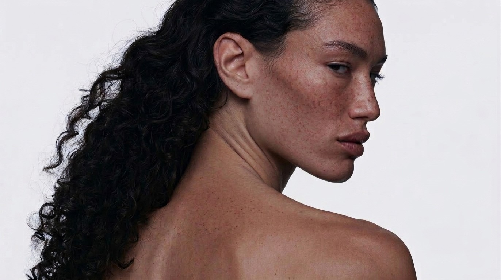

CREATIVE DIRECTOR
& STRATEGIST
I turn business challenges into focused creative ideas, campaign platforms and brand worlds. 11+ years connecting strategy with creative direction and hands-on execution.
SHOWREEL ↓AMANDA POUSETTE
CREATIVE DIRECTOR & STRATEGIST
My approach is Entertainment First: finding the story or experience people want to engage with, then connecting that attention to a clear business purpose.
My background across film, music, live experiences and digital work helps me find unexpected connections and fresh directions for a brief. I enjoy asking questions, challenging an initial brief and giving teams a clear idea to build on.
SELECTED CLIENTS
IKEA / ADIDAS / VOLVO / MARSHALL / UNIQLO / ARLA / ACNE / SONY MUSIC
JONAS ÅKERLUND / TOM HOPE / MATSMART
THE IDEA
A collection launch.
A fashion event.
THE APPROACH
The concept turned the IKEA × Zandra Rhodes collection launch into a Fashion Week-style hybrid experience. Transforming rooms introduced the collection before a livestream catwalk at the IKEA Museum. Films, installations and productions in London, Stockholm and Älmhult connected the idea across the global launch.
MY ROLE / RESULT
Won the pitch with an original idea and concept. Led global creative direction, film direction and production.
Collection sold out globally in 3 days.

THE IDEA
Creators Studio.
Built around community.
THE APPROACH
Created Creators Studio for Adidas, bringing influencers, artists and athletes together through classes, events, technology workshops and community. For Ultraboost 19, two connected content streams served Adidas’ channels and participating running clubs and influencers. The films were shared through those communities and the events we produced, connecting the content with the live experience.
MY ROLE / RESULT
Created the Creators Studio and developed the content strategy and scripts. Filmed, edited and produced the original music.
Delivered 15 social-first films.

THE IDEA
From an asset brief
to a connected launch.
THE APPROACH
An initial brief for a few EX90 assets grew into an integrated launch. One creative expression connected the event in Kungsträdgården with social content, photography and digital screens throughout the venue. Presentations and launch communication were developed directly with Volvo’s CEO and leadership team.
MY ROLE / RESULT
Led the creative direction, visual concept, live photography and event.
Worked directly with Volvo’s CEO and leadership team.

THE IDEA
One luxury brand world.
Built with AI.
THE APPROACH
Chiyo’s brand world is taking shape around a consistent identity and visual language that extends beyond the jewellery itself. Gen AI brings the direction to life across campaign imagery, product presentation, packaging, catalogues and retail concepts.
MY ROLE / RESULT
Developing the brand identity, communication and Gen AI creative direction.
An ongoing client assignment, currently in development.

THE IDEA
A brand built
through community.
THE APPROACH
With no model or media budget, real community events and ambassadors became the foundation for Stay in Place’s growth. A coherent identity, sports bra design, photography and film gave the brand an expression that could grow with its community.
MY ROLE / RESULT
Created the identity, designed sports bras and produced the photography and films.
Built a network of ambassadors and 9K organic Instagram followers.
ENTERTAINMENT FIRST.
FROM IDEA TO IMPACT.
I start with the story or experience people want to engage with, then connect that attention to a clear business purpose. The idea leads the creative direction, the production and the tools.
ONE CREATIVE IDEA. CONNECTED THROUGH DELIVERY.
I give teams a clear direction to build on, from the brief and preparation to the set and final delivery. Real production or an AI-built world can be the starting point. Node-based workflows help extend the idea while keeping the brand coherent.
ENGAGE
Find the story, experience or hook that connects the audience with the business purpose.
DIRECT
Shape the concept, key messages and visual world using the brief, source material and brand guidelines.
CREATE
Brief teams and lead the production of films, imagery and experiences, using live production, AI or both.
EXTEND
Adapt for audiences, markets, channels and formats. Use results and client feedback to guide the next iteration.
AMANDA POUSETTE
STRATEGIC THINKING.
CREATIVE LEADERSHIP.
I bring strategic thinking, original ideas and the experience to lead creative work from the first conversation through delivery.
For IKEA, that meant turning a collection launch into a global fashion event. For Adidas, creating Creators Studio around content, live experiences and community.
Looking for a creative leader for your team or next project? Let’s talk.
Creative Director & Strategistamanda.pousette.w@gmail.comLinkedIn ↗+46 73 880 00 99DOWNLOAD PORTFOLIO PDF ↓
